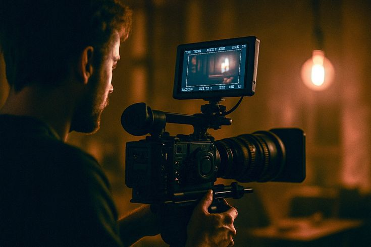

ПРОФЕСІЙНЕ ОБЛАДНАННЯ

Технічний арсенал для зйомок:
Для отримання кінематографічної картинки критично важливо використовувати відповідне технічне забезпечення:
- Камери та оптика: Використання повнокадрових сенсорів та анаморфних об'єктивів дозволяє досягти унікального розмиття фону та широкого динамічного діапазону.
- Освітлення: Світло грає вирішальну роль. Поєднання ключового, заповнюючого та контрового світла створює необхідний об'єм та атмосферу в кадрі.
- Звукове обладнання: Якісний звук становить 50% успіху відео. Для запису використовуються спрямовані мікрофони-гармати та бездротові петличні системи.